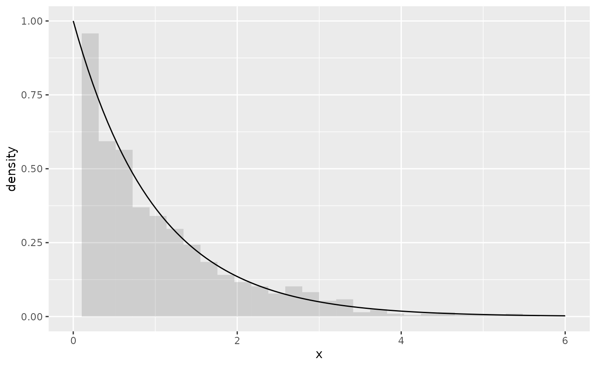
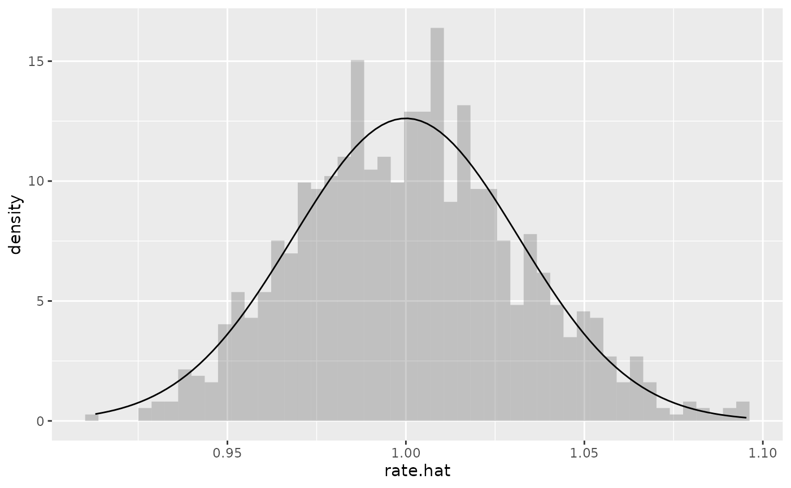
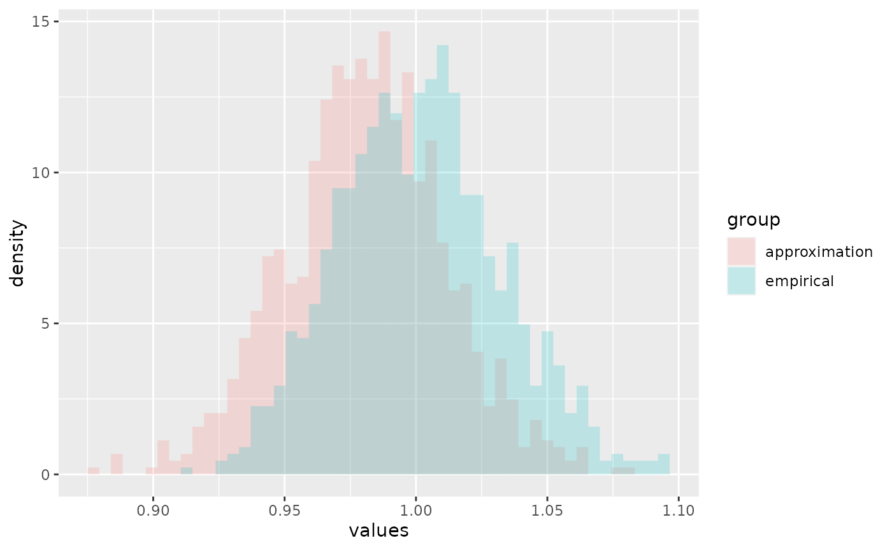

Introduction
To demonstrate the R package algebraic.mle, we consider the relatively simple case of a random sample from i.i.d. exponentially distributed random variables.
First, we load the R package algebraic.mle, along with other R packages we need, with:
Generating a sample
We define the parameters of the i.i.d. random sample with:
n <- 1000
rate <- 1We generate a random sample \(X_i \sim \operatorname{EXP}(\lambda=1)\) for \(i=1,\ldots,n\) with:
We have observed a sample of size \(n=1000\). We show some observations from this sample (data frame) with:
We show a histogram of the sample overlaid with a plot of the exponential function’s pdf, with:
ggplot(x, aes(x=x)) + geom_histogram(aes(y=..density..),alpha=.2) +
xlim(0,6) +
geom_function(fun=dexp)
Maximum likelihood estimation
If we would like to estimate \(\lambda=1\), we can do so using maximum likelihood estimation as implemented by the algebraic.mle package:
rate.hat <- mle_exp(x$x)
summary(rate.hat)
#> Maximum likelihood estimator, of type mle_exp ,
#> is normally distributed with mean
#> [1] 0.9809235
#> and variance-covariance
#> [,1]
#> [1,] 0.000962211
#> ---
#> The asymptotic mean squared error 0.000962211
#> The asymptotic 95% confidence interval is
#> 2.5 % 97.5 %
#> 1 0.9299009 1.031946
#> The log-likelihood is -1019.261
#> The AIC is 2040.522We can show the point estimator with:
point(rate.hat)
#> [1] 0.9809235We can show the Fisher information and variance-covariance matrices with:
fisher_info(rate.hat)
#> [,1]
#> [1,] 1039.273
vcov(rate.hat)
#> [,1]
#> [1,] 0.000962211(If rate.hat had been a vector, vcov would have output a variance-covariance matrix. We may consider the above outputs \(1 \times 1\) matrices.)
We can show the confidence interval with:
confint(rate.hat)
#> 2.5 % 97.5 %
#> 1 0.9299009 1.031946Sampling distribution of the MLE
In general, to estimate the sampling distribution, we generate \(B=10000\) samples (of size \(1000\)) and their corresponding estimators, \(\hat\theta^{(1)},\ldots,\hat\theta^{(B)}\).
Normally, we do not have \(B\) samples, and if we did, we would gather all \(B\) samples into one sample (or used a weighted MLE), which would contain more (Fisher) information about \(\theta\).
However, a nice property of MLEs is that, asymptotically, they converge to a normal distribution with a mean given by the true parameter, in this case \(\lambda\), and a variance-covariance given by the inverse of the Fisher information matrix \(I\), in this case \(I(\lambda) = n/\lambda^2\), i.e., \(\hat\lambda \sim N(\lambda,I^{-1}(\lambda))\).
We observe the empirical sampling distribution of \(\hat\theta\) overlaid with the theoretical asymptotic distribution with:
B <- 1000
data0 <- numeric(length=B)
for (i in 1:B)
{
x <- stats::rexp(n,rate)
data0[i] <- point(mle_exp(x))
}
ggplot(tibble(rate.hat=data0), aes(x=rate.hat)) +
geom_histogram(aes(y=..density..),alpha=.3,bins=50) +
geom_function(fun=function(x) { dnorm(x,mean=rate,sd=rate/sqrt(n)) })
We do not know \(\lambda\), but we may estimate it from a sample, and thus we may approximate the sampling distribution of \(\hat\lambda\) with \(N(\hat\lambda,I^{-1}(\hat\lambda))\).
Since we are only giving one sample, we cannot do as we did before to provide \(B\) estimates of \(\lambda\). However, we can sample from the approximation of the asymptotic distribution of \(\hat\lambda\) with:
data1 <- sampler(rate.hat)(B)We visually compare the two MLE samples, data0 and data1, with:
data <- data.frame(values=c(data0,data1), group=c(rep("empirical",B),rep("approximation",B)))
ggplot(data,aes(x=values,fill=group)) +
geom_histogram(aes(y=..density..),position="identity", alpha=0.2, bins=50)
Due to sampling error, we see that the approximation, the estimate of the asymptotic sampling distribution \(N(\hat\lambda,\hat\lambda/n^{1/2})\), is shifted to the left of the sample from the true distribution, but they appear to be quite similar otherwise.
Invariance property of the MLE
An interesting property of an MLE \(\hat\lambda\) is that the MLE of \(f(\lambda)\) is given by \(f(\hat\lambda)\).
The method rmap applied to an object x for which is(x,"mle") == TRUE and a function f compatible with point(x) (and optionally a simulation sample size) computes the MLE of f(x).
Example
We know that the MLE \(\hat\lambda \sim N(\lambda,\lambda^2/n)\). We seek a transformation \(g(\hat\lambda)\) such that its expectation is \(2 \lambda\), i.e., \(g(\lambda) = 2\lambda\):
f <- function(lambda) 2*lambdaWe compute the MLE of \(2 \hat\lambda\) (using a simulation size \(n=1000\)) with:
f.hat <- rmap(rate.hat,f,n=1000)Note that the simulation size is only for estimating \(f(\lambda)\); regardless of how large large \(n\) is, the MLE of \(f(\hat \lambda)\) will have a sampling error that is, at best, a function of the sampling error \(\hat\lambda\).
Then, \(\operatorname{var}(f(\hat\lambda)) = 4 \lambda^2/n\). Letting \(\lambda=1\), we see that, asymptotically, \(g(\hat\lambda) \sim N(2,4/n)\).
We expected a mean of \(2\) and a variance of \(4/n = 0.004\), which is pretty close to what we obtained:
Weighted MLE: a weighted sum of maximum likelihood estimators
Since the variance-covariance of an MLE is inversely proportional to the Fisher information that the MLE is defined with respect to, we can combine multiple MLEs of \(\theta\), each of which may be defined with respect to a different kind of sample, to arrive at the MLE that incorporates the Fisher information in all of those samples.
Consider \(k\) mutually independent MLE estimators of parameter \(\theta\), \(\hat\theta_1,\ldots,\hat\theta_k\), where \(\hat\theta_j \sim N(\theta,I_j^{-1}(\theta))\).
Then, the maximum likelihood estimator of \(\theta\) that incorporates all of the data in \(\hat\theta_1,\ldots,\hat\theta_k\) is given by the inverse-variance weighted mean, \[ \hat\theta = \left(\sum I_j(\theta)\right)^{-1} \left(\sum I_j(\theta) \theta_j\right). \]
Example
To evaluate the performance of the weighted MLE, we generate a sample of \(N=1000\) observations from \(\operatorname{EXP}(\lambda=1)\) and compute the MLE for the observed sample, denoted by \(\theta\).
We then divide the observed sample into \(r=5\) sub-samples, each of size \(N/r=100\), and compute the MLE for each sub-sampled, denoted by \(\theta^{(1)},\ldots,\theta^{(r)}\).
Finally, we do a weighted combination these MLEs to form the weighted MLE, denoted by \(\theta_w\):
N <- 1000
r <- 5
samp <- rexp(N)
samp.sub <- matrix(samp,nrow=r)
mles.sub <- list(length=r)
for (i in 1:r)
mles.sub[[i]] <- mle_exp(samp.sub[i,])
mle.wt <- mle_weighted(mles.sub)
mle <- mle_exp(samp)We show the results in the following table:
df <- data.frame(
c(point(mle.wt),point(mle)),
c(vcov(mle.wt),vcov(mle)))
colnames(df) <- c("point estimate","variance")
rownames(df) <- c("weighted MLE", "MLE")
print(df)
#> point estimate variance
#> weighted MLE 1.025901 0.001053293
#> MLE 1.026701 0.001054114We see that \(\hat\theta\) and \(\hat\theta_w\) model approximately the same sampling distribution for \(\theta\).